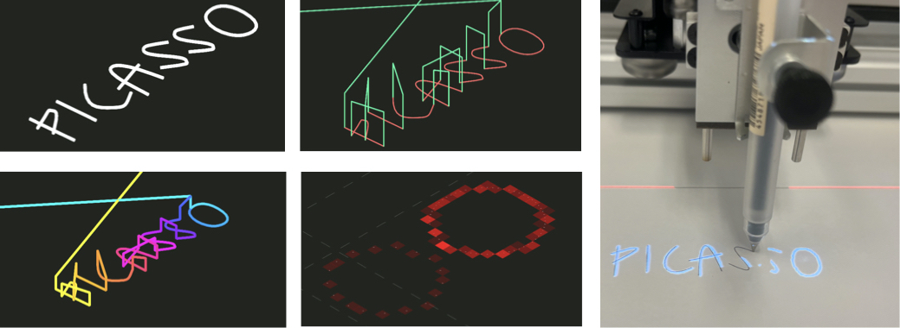
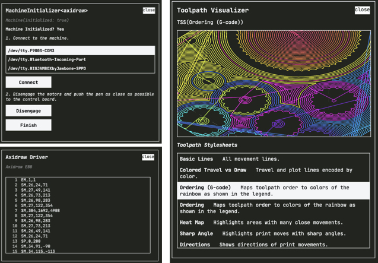

I study how innovating with programmable digital fabrication machines can feel more like actually programming—not just running code.
Machines like 3D printers, CNC mills, and laboratory automation tools have enabled new advances in science, art, and engineering, but remain difficult to program beyond common-case tasks.
In particular, I focus on exploratory digital fabrication, where practitioners are pushing the boundaries of machine capabilities to investigate unexplored manufacturing possibilities.
To better support exploratory fabrication, I prototype novel software tools drawing on ideas from computational notebooks, programming languages, and data visualization.
Fabrication-as-Programming

Robust Visualization for Machine Toolpaths

Verso provides toolpath stylesheets (TSS) which let users visualize different task-specific aspects of machine behavior, for example, path (re)ordering and heat concentrations for laser cutting.
Documenting Digital Fabrication through Computational Notebooks

Work under review. Please reach out if you'd like to know more!